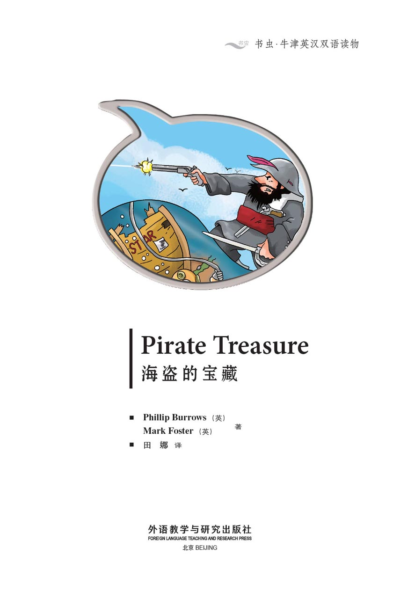
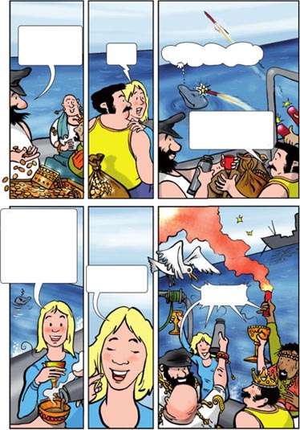
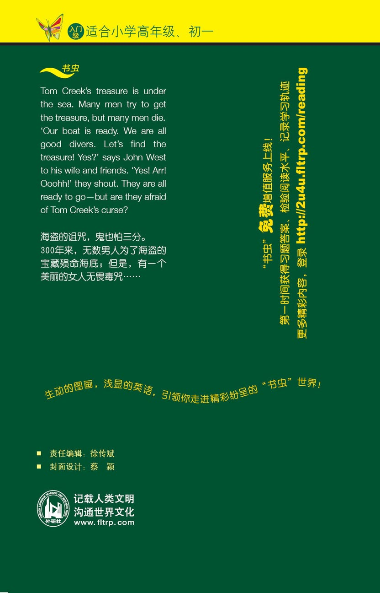

扉页

版权页
京权图字：01-2013-7806
Published by arrangement with Oxford University Press for sale in the People's Republic of China only and not for export therefrom. This edition is for sale in the mainland of China only, excluding Hong Kong SAR, Macao SAR and Taiwan.
© Oxford University Press 2010
Oxford is a registered trademark of Oxford University Press
图书在版编目（CIP）数据
海盗的宝藏：英汉对照／（英）伯罗斯（Burrows, P.），（英）福斯特（Foster, M.）著；田娜译．—北京：外语教学与研究出版社，2013.11
（书虫·牛津英汉双语读物）
书名原文：Pirate treasure
ISBN 978-7-5135-3781-0
Ⅰ．①海… Ⅱ．①伯…②福…③田… Ⅲ．①英语—汉语—对照读物②短篇小说—英国—现代 Ⅳ．①H319.4：I
中国版本图书馆CIP数据核字（2013）第272354号
出版人 蔡剑峰
责任编辑 徐传斌
封面设计 蔡 颖
出版发行 外语教学与研究出版社
社 址 北京市西三环北路19号（100089）
网 址 http://www.fltrp.com
版 次 2013年12月第1版
书 号 ISBN 978-7-5135-3781-0
制售盗版必究 举报查实奖励
版权保护举报电话：（010）88817519
内容简介
内容简介
1607年，汤姆·克里克的海盗船“黑星号”沉入了海底，汤姆·克里克失去了他所有的财宝。就在船沉入海底的时候，他喊道：“这是我的财宝，不是别人的。我诅咒这些财宝——永远诅咒！”
许多年过去了。许多人试图得到那些财宝。许多人因此而丧生。
2009年，又有一行人踏上了寻找“黑星号”的征程。这艘船叫作“沙丁鱼号”。约翰·韦斯特和他的妻子梅以及他们的朋友们想要找到财宝，他们并不害怕汤姆·克里克的诅咒，有的人甚至认为根本没有什么诅咒。
他们这么想，究竟是对了，还是疯了？
PIRATE TREASURE
PIRATE TREASURE
It is 1607. Tom Creek's pirate boat, The Black Star, goes down in the sea. Tom Creek loses all his treasure. As the boat goes down he shouts, 'This is my treasure and no other man's. I curse this treasure – forever.'
Many years pass. Many men try to get the treasure. Many men die.
It is 2009. There is a new expedition to The Black Star. The boat is called The Sardine. John West, his wife Mae, and their friends want to get the treasure. They are not afraid of Tom Creek's curse. Some of them think there is no curse.
Are they right or are they mad?
目录
Pirate Treasure 海盗的宝藏


GLOSSARY 词汇表
GLOSSARY
词汇表
boat n. you travel across the sea in this 船
broken adj. in more than one piece 破碎的
captain n. the most important man on a boat 船长
curse v. to make something bad happen to another person 诅咒
dive v. to go a long way under the sea 潜水
escape v. to run away from something 逃脱
expedition n. when people go somewhere to look for something 探险
fight v. to hit someone 与……战斗
fish n. an animal that swims in the sea 鱼
forever adv. for a very long time 永远
full adj. a bag is full when it has lots of things in it 充满的
mad adj. when a person is not normal 疯狂的
rich adj. when you have lots of money 富有的
safe adj. when no one can hurt you 安全的
swim v. to move through water 游泳
this is the life we say this when everything is good 这才是生活呢
treasure n. important things that you can get a lot of money for 宝藏
trouble n. problems 麻烦
world n. the planet Earth 世界
ACTIVITIES 阅读练习
ACTIVITIES 阅读练习
ACTIVITIES
Before Reading
1 Look at the front and back covers of the book. Now answer these questions.
1) What is John West looking for?
a □ Treasure.
b □ Fish.
c □ Love.
2) Where is he looking?
a □ Up a hill.
b □ Under the sea.
c □ In a city.
3) Who is Tom Creek?
a □ A diver.
b □ John West's friend.
c □ A pirate.
2 Guess what happens. In the story...
1) Tom Creek loses some treasure.
Yes □／No □
2) Tom Creek finds some treasure.
Yes □／No □
3) John West's friends run away.
Yes □／No □
4) they see a dolphin.
Yes □／No □
ACTIVITIES
While Reading
1 Answer these questions.
1) When does The Black Star go down?
2) Who says 'I curse this treasure forever'?
3) When does a big wave hit a boat?
4) When does a door shut under the sea?
2 What are the missing words?
1) 'Tomorrow they are going to find The Black Star's _____.'
a □ treasure
b □ pirate
c □ sandwiches
2) 'Are you mad? There is no _____.'
a □ shark
b □ sun
c □ curse
3) 'We are all good _____. Let's find the treasure.'
a □ pirates
b □ men
c □ divers
4) 'Don't go to The Black Star. My men... they are all _____.'
a □ angry
b □ dead
c □ afraid
3 Answer these questions.
1) How does Barry Barnes leave the room?
2) Who sees a dolphin?
3) What can they see on the screen?
4) Why can't they dive today?
4 Answer these questions.
1) Why does John say, 'Mae, you can't dive'?
2) Why does John say, 'That doesn't look good'?
3) Why does the diver say, 'Look at that'?
4) Why does Mae say, 'John, there's trouble'?
5 Are these sentences true or false?
1) John thinks The Black Star is bad.
T □／F □
2) They can see a dolphin in the water.
T □／F □
3) They run away from the shark.
T □／F □
4) The shark sees some blood.
T □／F □
6 Answer these questions.
1) Why does John say, 'Mae! Come back'?
2) Why does Mae say, 'They aren't interested in me'?
3) Why does Mae ask, 'What do you think, little one'?
4) Why does Mae say, 'No more. I'm too tired'?
5) Why does the dolphin say, 'Ow! It's them again'?
ACTIVITIES
After Reading
1 Tell the story to a friend. Use these words.
pirate / boat / curse / dead / treasure / shark / dolphin / woman / dive / expedition
2 Fill in the bubbles to write a different ending.

3 Put these sentences in the correct order. Number them 1–6.
a □ '... But I am a woman!'
b □ 'Don't be afraid of the shark. I know what to do.'
c □ 'Fight them, boys. The Black Star is our boat.'
d □ 'I can't stay here. I must find her now.'
e □ 'Be careful. I think his foot is broken.'
f □ 'Hey! You really are dead.'
4 Match the beginnings and endings of these sentences.
1) The Black Star is...
2) John West tries to get the treasure...
3) John cuts his hand...
4) Mae is not hurt by the curse...
5) The dolphin does...
a) and a shark comes.
b) not get a fish.
c) Tom Creek's pirate boat.
d) in his boat, The Sardine.
e) because she is a woman.
TRANSLATION 参考译文
TRANSLATION 参考译文
PIRATE TREASURE
海盗的宝藏
5th August 1607.
Fight them, boys. The Black Star is our boat.
I am afraid!
Ow, my leg!
(Boom!)
That looks close.
Very close!
Be careful. I am Tom Creek, and I feel angry. Don't do that again.
Is this the wrong time to ask for more money?
Yes!
This is my treasure and no other man's. I curse this treasure — forever. This is Tom Creek's curse!
1607年8月5日。
杀呀，伙计们！“黑星号”是我们的船！
我好害怕！
哎哟，我的腿！
（轰隆！）
好险。
险得很！
小心点儿！我是汤姆·克里克，我很生气！别再搞这种把戏。
这会儿要求加薪是不是不太合适？
当然！
这是我的财宝，不是别人的。我诅咒这些财宝——永远诅咒！这是汤姆·克里克的诅咒！
7th December 1841. On the sea near The Black Star.
Come on, men!
Let's find the treasure.
Goodbye, Mum. Goodbye, Dad.
Help! I can't swim.
Goodbye, World.
22nd April 1907. Another man wants the treasure.
Yum. Take it easy!
Yuk. Get off me.
1841年12月7日，“黑星号”附近的海面上。
加油，伙计们！
咱们去找宝藏。
再见了，妈妈。再见了，爸爸。
救命啊！我不会游泳！
再见了，这个世界。
1907年4月22日，又有一个人想找到宝藏。
呀呣。放轻松点儿！
呸！放开我！
16th February 1977. Another boat needs help.
Wheeee!
Stop! I feel ill.
Uh oh. No treasure today.
25th June 1999. Another man dies.
Look at that lot!
(THUMP!)
Oh dear.
(CRACK!)
Help me! Help me!
1977年2月16日，又有一艘船需要帮助。
啊啊啊！
停下来！我觉得不舒服。
哎呀！今天找不到财宝了。
1999年6月25日，又有一人丧生。
瞧！这么多财宝！
（砰！）
唉，天哪！
（咔嚓！）
救救我！救救我！
Look, that's us.
Listen! "The boat is called The Sardine. John West and his wife Mae own it. Tomorrow they are going to find The Black Star's treasure. Are they afraid of Tom Creek's curse?"
Well, are you afraid of the curse, men?
I'm not afraid of anything... well... cats. I don't like cats.
Cats? Where are the cats?
瞧，这说的是我们。
听着！“这艘船叫‘沙丁鱼号’，船的主人是约翰·韦斯特和他的妻子梅。明天他们就要去寻找‘黑星号’的财宝了。他们会惧怕汤姆·克里克的诅咒吗？”
那么，你们害怕诅咒吗，伙计们？
我什么都不怕……这个……除了猫。我不喜欢猫。
猫？猫在哪儿呢？
Are you mad? (POP!) There is no curse.
Tom Creek is dead. The curse is dead.
Our boat is ready. We are all good divers. Let's find the treasure! Yes?
Yes!
Arrr!
Oooh!
你疯了吗？（嘭！）根本没什么诅咒。
汤姆·克里克已经死了，诅咒就不存在了。
我们的船已经备好了，我们都很擅长潜水。咱们去找宝藏吧！好吗？
好的！
啊！
哦！
Later that day.
I think The Black Star is here.
Who is that man?
Barry Barnes? He's a captain like you. But all his men are dead because of the treasure.
Tell me about the treasure. And the curse.
Don't go to The Black Star. My men... they are all dead. All dead, I tell you.
那天晚些时候。
我认为“黑星号”就在这里。
那个人是谁？
巴里·巴恩斯？他跟你一样，也是个船长。不过他手下的人都因为那个宝藏而死掉了。
给我说说那个宝藏的事情，还有那个诅咒。
别去找“黑星号”。我的手下……他们都死了。都死了，我告诉你吧。
The treasure... is it here?
Bad!
(RIP!)
Dead!
Curse!
One minute later.
Hey! You really are dead.
宝藏……在这里吗？
烂玩意儿！
（哧！）
该死！
天杀的！
一分钟之后。
喂！你们死定了！
The next morning.
Last night... that man in red trousers?
He is mad. There isn't a curse.
Please don't go. Too many men are dead.
Don't listen to her.
A little later.
(Chug...)
Mmm.
Yum.
第二天早晨。
昨天晚上……那个穿红裤子的人？
他疯了。没什么诅咒。
请不要去。已经死了太多人了！
别听她的。
没过多久。
（突突突……）
呣。
呀呣，好吃。
Aah! Sun, sea, and sandwiches. This is the life!
Yum.
Mmm.
Look! A dolphin.
I'm not afraid of dolphins — just cats.
Look at me!
Come on. Give me a fish.
Forget it. I'm off.
(SPLASH!)
啊！阳光、大海和三明治——这才是生活！
呀呣，好吃。
呣。
瞧啊！海豚。
我可不害怕海豚——我只怕猫。
瞧瞧我！
来，给我一条鱼。
算了吧，我走了。
（哗啦！）
Two days later.
(Chug...)
Okay, men. The Black Star is here.
Hurray! I want to swim. Let me dive.
Wait! You can't dive now. First we must look.
What can you see?
Wait a minute.
Look at that!
We're rich!
Money. Money. Money.
两天后。
（突突突……）
好了，伙计们。“黑星号”就在这里。好哇！我想游泳。让我潜水吧。
等一等！你现在不能潜水。我们得先看看情况。
你看到了什么？
等一下。
看那个！
我们发财了！
钱！钱！钱！
Wait. Look at the screen. It's a skeleton. This doesn't look good.
It's okay. It's not the curse.
(GULP!)
Look! There are more skeletons.
Yes... and there's more treasure. We're all very rich. It's okay.
Why are we waiting? Let's go.
It's too late today. We can dive tomorrow morning.
等等。看屏幕，是一具骷髅。这看起来可不妙。
没关系。这跟诅咒无关。
（倒吸口气！）
瞧！还有一些骷髅。
是的……还有更多财宝呢。我们都发财了。没事的。
那我们还等什么？动手吧！
今天太晚了。我们可以明天早晨再潜水。
The next morning.
Are you okay, Mick?
My wetsuit is too small.
You're too big, I think.
Mae, you can't dive. We must watch the screen.
Watch out!
Oooh. It's cold!
I'm not happy. The men are diving— and I am not.
第二天早晨。
你没事吧，米克？
我的潜水衣太瘦了。
我觉得是你太胖了。
梅，你不能潜水。我们得有人监视着屏幕。
小心点儿！
哦！太冷了！
我不开心。男人都去潜水了，而我却去不了。
Suddenly it gets dark.
That doesn't look good.
No, you're right.
Let's bring them up.
Oh, they're okay. They're in the water.
They're big men, not boys.
I'm still not happy.
突然，天色暗了下来。
这看起来可不妙。
你说得对，的确不妙。
咱们把他们叫上来吧。
哦，他们没事的。他们在水里呢。
他们是大男人，不是小孩子了。
我还是不开心。
It's a long way.
Nothing here.
Nothing there.
Wow!
Look at that!
Oh, man!
(CRACK!)
Watch out!
真够远的。
这儿什么都没有。
那儿也什么都没有。
哇！
瞧那个！
哦，乖乖！
（咔嚓！）
小心！
John, there's trouble.
(POP!)
Aghh... my foot!
It's okay. You're safe now.
Help him up.
Be careful. I think his foot is broken.
Thanks, boys.
Look at all that treasure. Let's dive again tomorrow.
约翰，有麻烦了。
（啪！）
啊……我的脚！
没事了。你现在安全了。
帮忙把他弄上去。
小心点儿。恐怕他的脚骨折了。
谢谢，伙计们。
瞧那些财宝！咱们明天再潜吧！
The next day.
More breakfast.
Okay. Mick can't dive today, but I can.
Be careful, John. The Black Star is bad.
Later that morning.
This is easy. There's lots of treasure.
Can cats swim?
(OW!)
Do you need help?
I'm okay. It's nothing.
第二天。
早餐又来喽。
好了。米克今天不能潜水了，可我能。
小心点儿，约翰。“黑星号”不太吉利。
那天上午晚些时候。
这简单。这儿财宝真多。
猫会游泳吗？
（哎哟！）
你需要帮助吗?
我没事。没什么。
There is a black thing in the water.
What's that? I can see something.
It's only a dolphin.
There's nothing there.
Suddenly...
(CRUNCH!)
Watch out! There is something there.
It's a shark! A big one!
Quick, come in here. It's safe in here.
Perhaps there is a curse.
水里有个黑色的物体。
那是什么？我看到有什么东西。
不过是一只海豚。
那儿什么都没有。
突然……
（嘎吱吱！）
小心！那儿有东西。
是条鲨鱼！个头儿很大！
快，到这儿来。这里是安全的。
或许真的有诅咒。
Quick! In here.
What happens now? We must escape from the shark.
Keith — swim to the left. Bill —swim to the right.
What about the shark?
Don't be afraid of the shark. I know what to do.
I think this is left.
I think this is right.
快！到这儿来！
现在怎么样了？我们必须躲开那条鲨鱼。
基思——朝左边游。比尔——朝右边游。
那鲨鱼呢?
别害怕鲨鱼。我知道怎么办。
我想这边是左。
我想这边是右。
Swim faster, swim faster.
Be very careful, John. We need you.
Got you!
Ooh... look at him.
Nice wetsuit.
Take that! I can swim away now.
Ouch! Something's wrong. That looks like... blood.
游快点儿，游快点儿。
千万小心，约翰。我们需要你。
抓住你了！
啊……瞧瞧他。
潜水衣不错。
接招！现在我可以游走了。
哎哟！有点不对劲儿。那看起来像是……血！
Back in the boat.
What do we do now?
I don't know.
I know.
You men! I understand Tom Creek's curse now. I know what to do.
Mae! Come back! There's a shark in the water.
Mae!
Come back!
(GLUG...)
There's more than one shark, John. Look at this.
回到了船上。
我们现在怎么办呢？
我不知道。
我知道。
你们这些男人！我现在明白汤姆·克里克的诅咒了。我知道该干什么了。
梅！回来！水里有鲨鱼。
梅！
回来！
（咕嘟……）
水里不止一条鲨鱼，约翰。看这里。
Ha! They aren't interested in me!
I'm almost there.
The men are too fat. They cannot get in here.
Look!
I can see sharks, but I can't see Mae. Where is she?
I can't stay here. I must find her now.
Wait, John. Look at this.
哈！它们对我不感兴趣！
我快到了！
男人太胖了，这里他们进不去。
瞧！
我能看到鲨鱼，可我看不见梅。她去哪儿了？
我不能待在这儿。我现在必须去找她。
等等，约翰。快来看。
They watch the screen.
Good girl!
That bag is full of treasure.
The men bring up one bag... then another...
... and another.
What do you think, little one?
Don't ask me. I'm a fish.
他们看着屏幕。
干得漂亮！
那个袋子装满了财宝。
男人们拉上来一个袋子……又拉上来一个袋子……
……又拉上来一个袋子。
你觉得怎么样，小家伙？
别问我，我是条鱼。
No more. I'm too tired.
Money, money, money...
Mae. We are all rich. But I am richer than anyone — because I have you.
And I have my treasure here — in my arms.
I have my treasure here in my hands.
没有了。我太累了。
钱，钱，钱……
梅，我们发财了。但我比谁都更富有——因为我有你。
我的财宝在这儿——我怀里的就是。
我的财宝——我手里的就是。
Looks like this is all for us then.
Oy!
Ow! It's them again!
Look at all this treasure! I know there is no curse.
You're wrong. The curse says, no man can have Tom Creek's treasure...
... But I am a woman!
Hoorah!
看起来这些都是我们的了。
是的！
哎哟！又是它们！
瞧这些财宝！我就知道没有什么诅咒。
你错了。诅咒说的是：任何男人都别想得到汤姆·克里克的财宝……
……可是，我是个女人！
好哇！
封底
